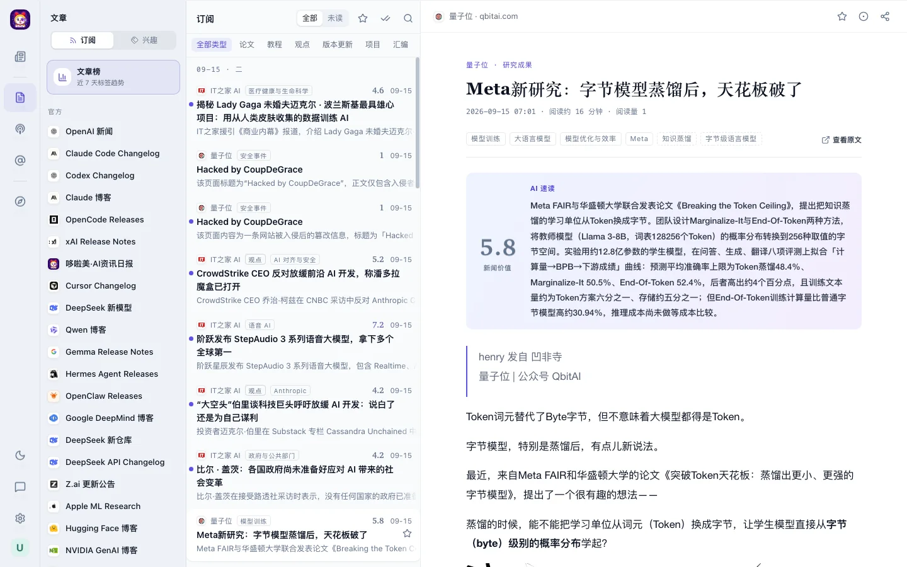

哆啦美
哆啦美03 阅读器定稿
阅读器：列表好扫，正文像一篇文章
条目行按推荐的「静」：来源与时间一行在上，标题唯一响亮，摘要两行。分数恢复原来的宋体数字加 AI 渐变分档，字体换成自托管的思源宋体，Mac 和 Windows 上一样。AI 速读用细线卡。
条目行静分数宋体数字 + AI 渐变分档AI 速读细线卡
整页
拖动分隔线对比现状与定稿；下面的画框可以切换中性色和亮暗，也可以按 1:1 原尺寸看。

现状定稿分数：恢复原来的身份线
你觉得黑体加黑色的分数突兀，这里恢复原来的画法：宋体数字，6 分以下退成最弱灰，6、7、8 分三档渐变逐级变浓，9 分以上是完整渐变。档位和混色比例与现在的 scoreTierClass 完全一样；唯一的变化是数字字体从 Charter 换成自托管的思源宋体，因为 Windows 上没有 Charter，会落到 Cambria。
正文与源栏
| 项目 | 现状 | 定稿 |
|---|---|---|
| 正文字号 / 行高 | 16.5px / 1.85 | 17px / 1.85，版心 616px |
| 文章标题、正文小标题 | Georgia 加宋体 | 思源宋体 600：标题 30px，小标题 21px |
| 眉头、署名行、日期组头 | 等宽字体，11–11.5px | 界面黑体 13px；眉头保留强调色 |
| 标签 | 11px 线框签 | 文字，中点分隔；规范标签次要灰，灵活标签最弱灰 |
| 引用块 | 2px 强调色竖条 | 2px 中性细线 |
| 图片 | 10px 圆角，无描边 | 圆角不变，加一圈极淡细线；暗色下降亮 8% |
| 粗体 | 700 | 600 + 墨色 |
| 源栏「文章榜」 | 带边框的淡紫卡片 | 普通导航行，与来源行同高 |
| 源栏组头 | 10.5px | 12px |